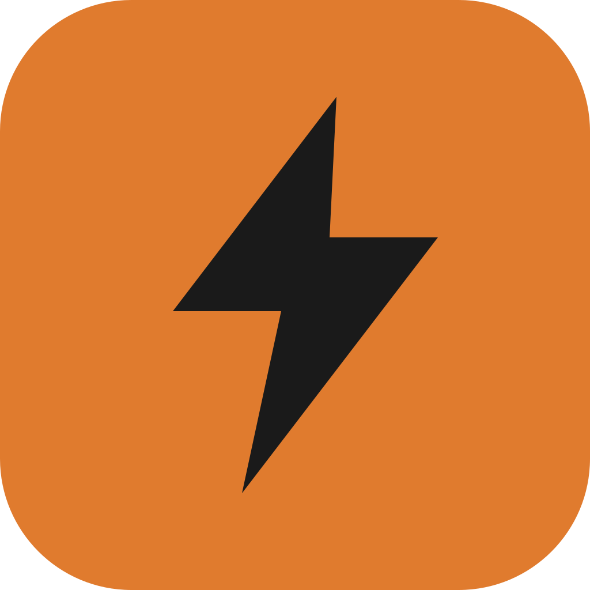

Flaash logo pack
Wordmark Playfair Black avec la signature aa italique. Les aperçus ci-dessous sont les PNG haute résolution (rendu pixel-perfect, à utiliser partout). Le dossier /logo contient aussi les SVG éditables et les marques en tracés vectoriels.
Wordmark — variantes principales


Lockups · wordmark + éclair


Mark · éclair & favicon
App icons

Quels fichiers utiliser ?
·
·
·
·
png/ — wordmarks & lockups en PNG transparent ~2000px : rendu garanti partout (réseaux sociaux, slides, print rapide), aucune police requise.·
flaash-*.svg wordmarks/lockups — SVG éditables avec texte Playfair : parfaits dans le web app et les outils de design où la police est installée. Pour un SVG 100% autonome, vectorise le texte (Figma/Illustrator → "Outline").·
flaash-bolt*.svg, app-icon, favicon — déjà en tracés vectoriels purs, autonomes, utilisables partout.